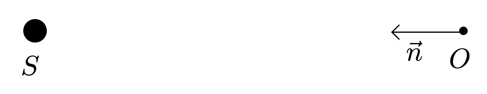
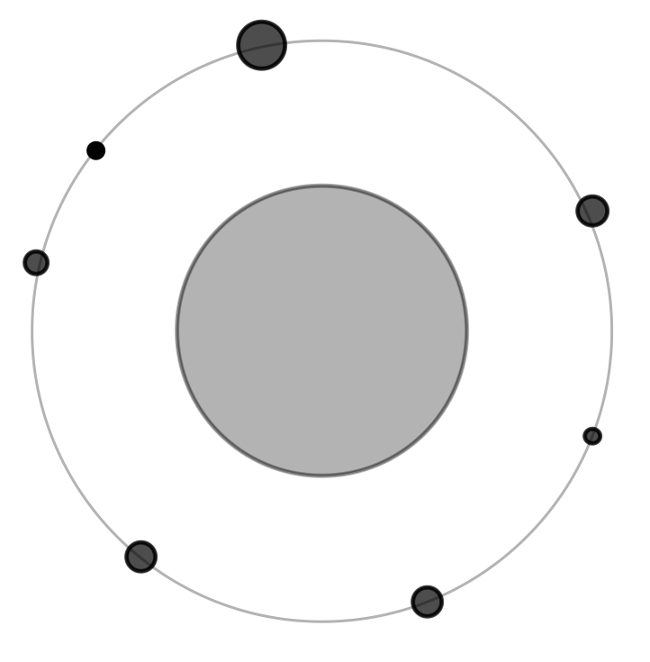
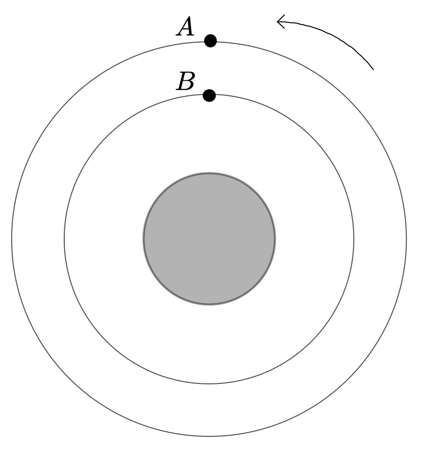
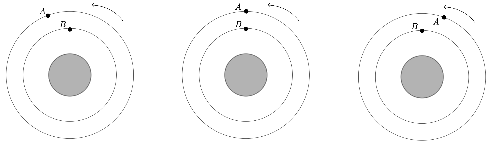

<!DOCTYPE html>
<html lang="fr" itemscope itemtype="http://schema.org/WebPage">
  <head>
    

  <meta charset="utf-8" />
  <meta http-equiv="X-UA-Compatible" content="IE=edge">
  <meta name="viewport" content="width=device-width, initial-scale=1.0, maximum-scale=1.0">

  <title>Exploration du système saturnien - Accueil</title>
  <meta name="description" content="Chapitre 8,7">
  <meta name="author" content="David Latreyte"/><script type="application/ld+json">
{
    "@context": "http://schema.org",
    "@type": "WebSite",
    "name": "Accueil",
    
    "url": "https:\/\/dlatreyte.github.io"
}
</script><script type="application/ld+json">
{
  "@context": "http://schema.org",
  "@type": "Organization",
  "name": "",
  "url": "https:\/\/dlatreyte.github.io"
  
  
  
  
}
</script>
<script type="application/ld+json">
{
  "@context": "http://schema.org",
  "@type": "BreadcrumbList",
  "itemListElement": [{
        "@type": "ListItem",
        "position": 1,
        "item": {
          "@id": "https:\/\/dlatreyte.github.io",
          "name": "home"
        }
    },{
        "@type": "ListItem",
        "position": 3,
        "item": {
          "@id": "https:\/\/dlatreyte.github.io\/terminales-pc\/chap-8\/7-saturne\/",
          "name": "Exploration du système saturnien"
        }
    }]
}
</script><script type="application/ld+json">
{
  "@context": "http://schema.org",
  "@type": "Article",
  "author": {
    "name" : "David Latreyte"
  },
  "headline": "Exploration du système saturnien",
  "description" : "Saturne, à cause de sa distance à la Terre et au Soleil, est une destination spatiale complexe qui nécessite un savoir-faire et des ressources financières très importants. La mission Cassini-Huygens reste, à ce jour, la seule mission à avoir placé une sonde, Cassini, en orbite autour de Saturne, et à avoir pu mener une étude approfondie de son système.\n Cet exercice se propose d\u0026rsquo;étudier l\u0026rsquo;une des particularités de la planète Saturne, ses anneaux, puis se concentre sur l\u0026rsquo;étude de deux aspects de la mission Cassini-Huygens : l\u0027atterrissage \u0013en douceur\u0014 de l\u0026rsquo;atterrisseur Huygens sur le sol de la lune la plus grosse de Saturne, Titan et une erreur de conception qui aurait pu faire échouer la partie la plus importante de la mission.",
  "inLanguage" : "fr",
  "wordCount":  1475 ,
  "datePublished" : "2020-12-29T17:38:14",
  "dateModified" : "2020-12-29T17:38:14",
  "image" : "https:\/\/dlatreyte.github.io\/first_page.jpg",
  "keywords" : [ "Champ gravitationnel, Force gravitationnelle, Repère de Frenet, Deuxième loi de Newton, Période de révolution, Mouvement uniforme, Accélération normale" ],
  "mainEntityOfPage" : "https:\/\/dlatreyte.github.io\/terminales-pc\/chap-8\/7-saturne\/",
  "publisher" : {
    "@type": "Organization",
    "name" : "https:\/\/dlatreyte.github.io",
    "logo" : {
        "@type" : "ImageObject",
        "url" : "https:\/\/dlatreyte.github.io\/first_page.jpg",
        "height" :  60 ,
        "width" :  60
    }
  }
}
</script>

<meta property="og:title" content="Exploration du système saturnien" />
<meta property="og:description" content="Chapitre 8,7">
<meta property="og:image" content="https://dlatreyte.github.io/first_page.jpg" />
<meta property="og:url" content="https://dlatreyte.github.io/terminales-pc/chap-8/7-saturne/" />
<meta property="og:type" content="website" />
<meta property="og:site_name" content="Accueil" />

  <meta name="twitter:title" content="Exploration du système saturnien" />
  <meta name="twitter:description" content="Chapitre 8,7">
  <meta name="twitter:image" content="https://dlatreyte.github.io/first_page.jpg" />
  <meta name="twitter:card" content="summary" />
  <meta name="twitter:site" content="@@DLatreyte" />
  <meta name="twitter:creator" content="@@DLatreyte" />
  <link href='https://dlatreyte.github.io/img/favicon.ico' rel='icon' type='image/x-icon'/>
  <meta name="generator" content="Hugo 0.79.0" />
  <link rel="alternate" href="https://dlatreyte.github.io/index.xml" type="application/rss+xml" title="Accueil"><link rel="stylesheet" href="https://cdnjs.cloudflare.com/ajax/libs/KaTeX/0.10.0/katex.min.css" integrity="sha384-9eLZqc9ds8eNjO3TmqPeYcDj8n+Qfa4nuSiGYa6DjLNcv9BtN69ZIulL9+8CqC9Y" crossorigin="anonymous">
  <link rel="stylesheet" href="https://use.fontawesome.com/releases/v5.5.0/css/all.css" integrity="sha384-B4dIYHKNBt8Bc12p+WXckhzcICo0wtJAoU8YZTY5qE0Id1GSseTk6S+L3BlXeVIU" crossorigin="anonymous">
  <link rel="stylesheet" href="https://maxcdn.bootstrapcdn.com/bootstrap/3.3.7/css/bootstrap.min.css" integrity="sha384-BVYiiSIFeK1dGmJRAkycuHAHRg32OmUcww7on3RYdg4Va+PmSTsz/K68vbdEjh4u" crossorigin="anonymous"><link rel="stylesheet" href="https://dlatreyte.github.io/css/main.css" /><link rel="stylesheet" href="https://fonts.googleapis.com/css?family=Lora:400,700,400italic,700italic" />
  <link rel="stylesheet" href="https://fonts.googleapis.com/css?family=Open+Sans:300italic,400italic,600italic,700italic,800italic,400,300,600,700,800" /><link rel="stylesheet" href="https://dlatreyte.github.io/css/syntax.css" /><link rel="stylesheet" href="https://dlatreyte.github.io/css/codeblock.css" /><link rel="stylesheet" href="https://cdnjs.cloudflare.com/ajax/libs/photoswipe/4.1.2/photoswipe.min.css" integrity="sha384-h/L2W9KefUClHWaty3SLE5F/qvc4djlyR4qY3NUV5HGQBBW7stbcfff1+I/vmsHh" crossorigin="anonymous">
  <link rel="stylesheet" href="https://cdnjs.cloudflare.com/ajax/libs/photoswipe/4.1.2/default-skin/default-skin.min.css" integrity="sha384-iD0dNku6PYSIQLyfTOpB06F2KCZJAKLOThS5HRe8b3ibhdEQ6eKsFf/EeFxdOt5R" crossorigin="anonymous">


  </head>
  <body>
    <nav class="navbar navbar-default navbar-fixed-top navbar-custom">
  <div class="container-fluid">
    <div class="navbar-header">
      <button type="button" class="navbar-toggle" data-toggle="collapse" data-target="#main-navbar">
        <span class="sr-only">Toggle navigation</span>
        <span class="icon-bar"></span>
        <span class="icon-bar"></span>
        <span class="icon-bar"></span>
      </button>
      <a class="navbar-brand" href="https://dlatreyte.github.io">Accueil</a>
    </div>

    <div class="collapse navbar-collapse" id="main-navbar">
      <ul class="nav navbar-nav navbar-right">
        
          
            <li>
              <a title="Infos" href="../../../about/infos">Infos</a>
            </li>
          
        
          
            <li>
              <a title="Blog" href="../../../">Blog</a>
            </li>
          
        
          
            <li class="navlinks-container">
              <a class="navlinks-parent">Cours</a>
              <div class="navlinks-children">
                
                  <a href="../../../premieres-pc">1ère Spé. PC</a>
                
                  <a href="../../../premieres-nsi">1ère Spé. NSI</a>
                
                  <a href="../../../terminales-pc">Terminale Spé. PC</a>
                
                  <a href="../../../terminales-nsi">Terminale Spé. NSI</a>
                
                  <a href="../../../terminales-es">Terminale Ens. Scientifique</a>
                
                  <a href="../../../superieur">... dans le supérieur</a>
                
              </div>
            </li>
          
        
          
            <li class="navlinks-container">
              <a class="navlinks-parent">Culture</a>
              <div class="navlinks-children">
                
                  <a href="../../../culture">Articles</a>
                
                  <a href="../../../programmes">Programmes</a>
                
              </div>
            </li>
          
        
          
            <li>
              <a title="Tags" href="../../../tags">Tags</a>
            </li>
          
        
          
            <li>
              <a title="Catégories" href="../../../categories">Catégories</a>
            </li>
          
        

        

        
      </ul>
    </div>

    
      <div class="avatar-container">
        <div class="avatar-img-border">
          <a title="Accueil" href="https://dlatreyte.github.io">
            
          </a>
        </div>
      </div>
    

  </div>
</nav>


    


<div class="pswp" tabindex="-1" role="dialog" aria-hidden="true">

<div class="pswp__bg"></div>

<div class="pswp__scroll-wrap">
    
    <div class="pswp__container">
      <div class="pswp__item"></div>
      <div class="pswp__item"></div>
      <div class="pswp__item"></div>
    </div>
    
    <div class="pswp__ui pswp__ui--hidden">
    <div class="pswp__top-bar">
      
      <div class="pswp__counter"></div>
      <button class="pswp__button pswp__button--close" title="Close (Esc)"></button>
      <button class="pswp__button pswp__button--share" title="Share"></button>
      <button class="pswp__button pswp__button--fs" title="Toggle fullscreen"></button>
      <button class="pswp__button pswp__button--zoom" title="Zoom in/out"></button>
      
      
      <div class="pswp__preloader">
        <div class="pswp__preloader__icn">
          <div class="pswp__preloader__cut">
            <div class="pswp__preloader__donut"></div>
          </div>
        </div>
      </div>
    </div>
    <div class="pswp__share-modal pswp__share-modal--hidden pswp__single-tap">
      <div class="pswp__share-tooltip"></div>
    </div>
    <button class="pswp__button pswp__button--arrow--left" title="Previous (arrow left)">
    </button>
    <button class="pswp__button pswp__button--arrow--right" title="Next (arrow right)">
    </button>
    <div class="pswp__caption">
      <div class="pswp__caption__center"></div>
    </div>
    </div>
    </div>
</div>


  
  
  


  

  <header class="header-section ">
    
    <div class="intro-header no-img">
      <div class="container">
        <div class="row">
          <div class="col-lg-8 col-lg-offset-2 col-md-10 col-md-offset-1">
            <div class="terminales-pc-heading">
              
                <h1>Exploration du système saturnien</h1>
              
              
                <hr class="small">
              
              
                
                  <h2 class="terminales-pc-subheading">Chapitre 8,7</h2>
                
              
              
            </div>
          </div>
        </div>
      </div>
    </div>
  </header>


    
<div class="container" role="main">
  <div class="row">
    <div class="col-lg-8 col-lg-offset-2 col-md-10 col-md-offset-1">

      <article role="main" class="blog-post" auto_numbering >
          
            <nav id="TableOfContents">
  <ul>
    <li><a href="#les-anneaux-de-saturne">Les anneaux de Saturne</a>
      <ul>
        <li><a href="#linteraction-gravitationnelle">L&rsquo;interaction gravitationnelle</a></li>
        <li><a href="#satellite-gravitant-sur-une-orbite-circulaire">Satellite gravitant sur une orbite circulaire</a></li>
        <li><a href="#disposition-dune-série-dobjets-ponctuels-sur-une-même-orbite">Disposition d&rsquo;une série d&rsquo;objets ponctuels sur une même orbite</a></li>
        <li><a href="#disposition-de-deux-objets-ponctuels-sur-deux-orbites-de-rayons-différents">Disposition de deux objets ponctuels sur deux orbites de rayons différents</a></li>
        <li><a href="#les-anneaux-de-saturne-1">Les anneaux de Saturne</a></li>
      </ul>
    </li>
    <li><a href="#la-mission-cassini-huygens">La mission Cassini-Huygens</a>
      <ul>
        <li><a href="#atterrissage-en-douceur-de-huygens">Atterrissage en douceur de Huygens</a></li>
        <li><a href="#défaut-de-conception-du-système-de-communication-entre-cassini-et-huygens">Défaut de conception du système de communication entre Cassini et Huygens</a></li>
      </ul>
    </li>
    <li><a href="#corrigé">Corrigé</a></li>
  </ul>
</nav>
          
        
        <hr />

        <blockquote>
<p>Saturne, à cause de sa distance à la Terre et au Soleil, est une destination spatiale complexe qui nécessite un savoir-faire et des ressources financières très importants. La mission Cassini-Huygens reste, à ce jour, la seule mission à avoir placé une sonde, Cassini, en orbite autour de Saturne, et à avoir pu mener une étude approfondie de son système.</p>
</blockquote>
<p>Cet exercice se propose d&rsquo;étudier l&rsquo;une des particularités de la planète Saturne, <em>ses anneaux</em>, puis se concentre sur l&rsquo;étude de deux aspects de la mission Cassini-Huygens : l'<em>atterrissage en douceur de l&rsquo;atterrisseur</em> Huygens sur le sol de la lune la plus grosse de Saturne, Titan et <em>une erreur de conception qui aurait pu faire échouer la partie la plus importante de la mission</em>.</p>
<center>
<strong>Les trois parties de cet exercice (1., 2. et 3.) sont indépendantes.</strong> 
</center>
<h2 id="les-anneaux-de-saturne">Les anneaux de Saturne</h2>
<p>
Les anneaux de Saturne sont les anneaux planétaires les plus importants du Système solaire. <em>Bien qu&rsquo;ils semblent continus vus depuis la Terre, ils sont en fait constitués d&rsquo;innombrables particules de glace</em> (95 à 99 % de glace d&rsquo;eau pure selon les analyses spectroscopiques) et de poussière dont la taille varie de quelques micromètres à quelques centaines de mètres ; ils ont chacun une orbite différente. Les anneaux forment un disque dont le diamètre est de $\pu{360000 km}$ (les anneaux principaux s&rsquo;étendent de $\pu{7000}$ à $\pu{72000 km}$) comportant plusieurs divisions de largeurs variées et dont l&rsquo;épaisseur va de 2 à 10 mètres. [etc.]</p>
<p>La sonde Cassini, a permis de montrer que la masse des anneaux est faible et que leur date de formation serait récente (quelques centaines de millions d&rsquo;années peut-être alors qu&rsquo;on admettait généralement qu&rsquo;ils dataient de la formation du système solaire).</p>
<div style="text-align: right;">
<a href="https://fr.wikipedia.org/wiki/Anneaux_de_Saturne" target="_blank">https://fr.wikipedia.org/wiki/Anneaux_de_Saturne</a>
</div>
<hr>
<p>L&rsquo;objectif de cette partie est de juger de la compatibilité d&rsquo;un modèle avec la phrase en italique ci-dessus.</p>
<h3 id="linteraction-gravitationnelle">L&rsquo;interaction gravitationnelle</h3>
<p>On considère une planète $S$, de symétrie sphérique, de masse $M$ et un objet $O$ assez petit (assimilable à un point matériel) de masse $m$, gravitant autour de $S$ avec un mouvement circulaire. On note $r$ la distance séparant le centre de la planète $S$ et l&rsquo;objet $O$.</p>
<ol>
<li>
<p>Reprendre, sur votre feuille, le schéma ci-dessous, et y représenter le vecteur force $\vec{F}_{S / O}$ qu&rsquo;exerce la planète $S$ sur l&rsquo;objet $O$ (sans considération d&rsquo;échelle).
</p>
</li>
<li>
<p>Donner l&rsquo;expression vectorielle de la force gravitationnelle $\vec{F}_{S / O}$ en fonction du vecteur unitaire $\vec{n}$.</p>
</li>
</ol>
<h3 id="satellite-gravitant-sur-une-orbite-circulaire">Satellite gravitant sur une orbite circulaire</h3>
<ol start="3">
<li>
<p>Lors de l&rsquo;étude du mouvement d&rsquo;un satellite de la Terre, on utilise généralement le référentiel géocentrique. Dans le cas présent, quel référentiel analogue doit-on choisir pour étudier le mouvement de l&rsquo;objet $O$ ?</p>
</li>
<li>
<p>Déterminer, en utilisant la deuxième loi de Newton, l&rsquo;expression du vecteur accélération $\vec{a}$ de l&rsquo;objet $O$ lors de ce mouvement, en fonction de $G$, $M$, $r$ et $\vec{n}$.</p>
</li>
<li>
<p>Représenter ce vecteur accélération $\vec{a}$ sur le schéma établi à la question 2.</p>
</li>
<li>
<p>Rappeler la définition du repère de Frenet et donner l&rsquo;expression du vecteur accélération $\vec{a}$ de l&rsquo;objet $O$ dans ce repère.</p>
</li>
<li>
<p>En déduire que la valeur $v$ de la vitesse de l&rsquo;objet reste constante au cours du mouvement.</p>
</li>
<li>
<p>Montrer que la valeur $v$ de la vitesse de l&rsquo;objet a pour expression
$$
v = \sqrt{\dfrac{GM}{r}}
$$</p>
</li>
<li>
<p>Rappeler la définition de la période de révolution $T$ de l&rsquo;objet $O$ au cours de son mouvement et donner son expression, en fonction de $G$, $M$, et $r$.</p>
</li>
<li>
<p>Montrer qu&rsquo;à la question précédente on a retrouvé la troisième loi de Kepler, pour le cas des mouvements circulaires.</p>
</li>
</ol>
<h3 id="disposition-dune-série-dobjets-ponctuels-sur-une-même-orbite">Disposition d&rsquo;une série d&rsquo;objets ponctuels sur une même orbite</h3>
<p></p>
<p>Soit un chapelet d&rsquo;objets, assimilables à des points matériels, mais de tailles et de <em>masses différentes</em>, satellisés autour de Saturne sur une même orbite circulaire de rayon $r$ qu&rsquo;ils parcourent tous dans le même sens.</p>
<p>La figure ci-dessus donne la configuration de ces objets à un instant donné (les échelles de taille des objets par rapport à Saturne n&rsquo;ont pas été respectées). On fait l&rsquo;hypothèse que les interactions gravitationnelles entre ces objets sont négligeables et que seule celle avec Saturne intervient.</p>
<ol start="11">
<li>
<p>Tous ces objets ont-ils la même vitesse sur l&rsquo;orbite ? Justifier.</p>
</li>
<li>
<p>Comment évolue la structure de l&rsquo;ensemble au cours du temps ?</p>
</li>
</ol>
<h3 id="disposition-de-deux-objets-ponctuels-sur-deux-orbites-de-rayons-différents">Disposition de deux objets ponctuels sur deux orbites de rayons différents</h3>
<p></p>
<p>Soient deux objets $A$ et $B$, assimilables à des points matériels, satellisés autour de Saturne sur deux orbites circulaires de rayon $r_{A}$ et $r_{B}$ différents ($r_{A} &gt; r_{B}$) mais de valeurs voisines. La figure ci-dessus donne la configuration de ces objets à un instant $t$ : ils sont disposés de façon que la direction $(AB)$ passe par $S$, le centre de Saturne ; la flèche indique le sens du mouvement (les échelles des rayons n&rsquo;ont pas été respectées). On considère que l&rsquo;interaction gravitationnelle entre ces deux objets est négligeable et que seule celle avec Saturne intervient.</p>
<p>À une date ultérieure, l&rsquo;objet satellite $B$ a effectué exactement une révolution autour de Saturne. On souhaite savoir où se trouve l&rsquo;objet $A$ sur son orbite.</p>
<p></p>
<h3 id="les-anneaux-de-saturne-1">Les anneaux de Saturne</h3>
<ol start="13">
<li>À l&rsquo;aide de l&rsquo;étude qui précède, en supposant valides les hypothèses faites dans la partie 1.3., montrer que si les anneaux de Saturne ont été à un moment donné d&rsquo;un seul tenant (soudés les uns aux autres), il est peu probable qu&rsquo;ils aient pu le rester par la suite.</li>
</ol>
<h2 id="la-mission-cassini-huygens">La mission Cassini-Huygens</h2>
<p>À la fin des années 1980, la NASA et l&rsquo;Agence spatiale européenne ont planifié une mission conjointe ayant pour objectifs l&rsquo;étude des principaux corps célestes présents dans le système saturnien : Saturne, ses anneaux, Titan (le plus gros satellite de Saturne),  et leurs interactions. Après des années de recherche et de construction, le 15 octobre 1997 une fusée transportant la sonde spatiale (constituée de l&rsquo;orbiteur Cassini et l&rsquo;atterrisseur Huygens) a été lancée. En 2004 cette sonde spatiale s&rsquo;est placée en orbite autour de Saturne et finalement, en 2005, l&rsquo;atterrisseur européen Huygens, après s&rsquo;être détaché de la sonde mère, s&rsquo;est posé à la surface de la lune Titan, et est parvenu à retransmettre des informations collectées durant la descente et après son atterrissage. L&rsquo;orbiteur Cassini est resté en orbite autour de Saturne, et a poursuivi l&rsquo;étude scientifique de la planète géante, en profitant de ses passages à faible distance de ses satellites pour collecter des données détaillées sur ceux-ci, jusqu&rsquo;en 2017.</p>
<h3 id="atterrissage-en-douceur-de-huygens">Atterrissage en douceur de Huygens</h3>
<p>L&rsquo;atterrisseur Huygens s&rsquo;est désolidarisé de l&rsquo;orbiteur à $\pu{1270 km}$ d&rsquo;altitude au dessus de Titan. Arrivé dans la haute atmosphère de Titan, à plus de $\pu{20000 km.h-1}$ et seulement freiné par ses boucliers thermiques, l&rsquo;atterrisseur a alors progressivement ralenti grâce à une succession de parachutes. <em>À $\pu{110 km}$ d&rsquo;altitude, le parachute final s&rsquo;est ouvert alors que la vitesse de Huygens était égale à $v_{0} = \pu{95,0 m.s-1}$ ; le mouvement est alors très rapidement devenu rectiligne et vertical, jusqu&rsquo;à l&rsquo;arrivée au sol, sur une surface solide mais molle, à la vitesse $v_{F} = \pu{6,0 m.s-1}$.</em></p>
<h4 id="données">Données</h4>
<ul>
<li>Masse de Huygens : $m = \pu{320 kg}$ ;</li>
<li>Masse de Titan : $m_{T} = \pu{1,35e23 kg}$ ;</li>
<li>Champ de pesanteur de Titan : $g_{T} = \pu{1,35 m.s-2}$.</li>
<li>La trajectoire est matérialisée par un axe vertical $(z' Oz)$ orienté vers le haut, dont l&rsquo;origine $O$ se trouve au niveau du sol de Titan.</li>
<li>La poussée d&rsquo;Archimède est négligeable dans ce problème.</li>
<li>Le mouvement de Huygens sera étudié dans un référentiel titanocentrique considéré galiléen.</li>
</ul>
<ol start="15">
<li>
<p>Quelles sont les deux forces qui agissent sur l&rsquo;atterrisseur dans la dernière phase du mouvement (phrase en italique dans le texte ci-dessus).</p>
</li>
<li>
<p>Calculer la valeur de la variation de l&rsquo;énergie mécanique du système lors de cette dernière phase.</p>
</li>
<li>
<p>On suppose que la force de frottement fluide reste constante lors de cette dernière phase. Déduire de la question précédente la valeur du travail de cette force lors de toute cette phase.</p>
</li>
<li>
<p>En déduire finalement la valeur de la force de frottement.</p>
</li>
</ol>
<h3 id="défaut-de-conception-du-système-de-communication-entre-cassini-et-huygens">Défaut de conception du système de communication entre Cassini et Huygens</h3>
<p>Comme Huygens n&rsquo;avait pas la taille nécessaire pour émettre directement ses informations à destination de la Terre, il était prévu qu&rsquo;il transmette ses données télémétriques, au cours de sa traversée de l&rsquo;atmosphère de Titan, par radio à Cassini. Ce dernier devait alors relayer les données vers la Terre à l&rsquo;aide de son antenne principale de $\pu{4 m}$ de diamètre. <em>Le système de communication entre Huygens et Cassini a été testé sur Terre avant le lancement (émetteur et récepteur étant alors immobiles), sans poser le moindre problème. Le lancement effectué, deux ingénieurs du projet ont cependant très vite découvert que ce système n&rsquo;avait pas suffisamment bien pris en compte le fait que, lors de la descente, la vitesse de Huygens par rapport à Cassini, importante, entraînerait une modification du signal émis par Huygens.</em></p>
<ol start="19">
<li>Expliquer quelle modification sur le signal émis par Huygens pourrait résulter de son mouvement par rapport à Cassini. En particulier, nommer le phénomène et indiquer quelle caractéristique du signal est affectée.<br>
Tout élément de réponse sera pris en compte.</li>
</ol>
<h2 id="corrigé">Corrigé</h2>
<hr />
<details style="background-color: #f2f2f2;">
    <summary>
        <strong> Corrigé</strong>
    </summary>
<p><a class="remote" href="../../../terminales-pc/chap-8/chap-8-7/chap-8-7-6.pdf" target="_blank">Corrigé au format pdf</a></p>
</details>
<hr />


        
          <div class="blog-tags">
            
              <a href="https://dlatreyte.github.io/tags/champ-gravitationnel/">Champ gravitationnel</a>&nbsp;
            
              <a href="https://dlatreyte.github.io/tags/force-gravitationnelle/">Force gravitationnelle</a>&nbsp;
            
              <a href="https://dlatreyte.github.io/tags/rep%C3%A8re-de-frenet/">Repère de Frenet</a>&nbsp;
            
              <a href="https://dlatreyte.github.io/tags/deuxi%C3%A8me-loi-de-newton/">Deuxième loi de Newton</a>&nbsp;
            
              <a href="https://dlatreyte.github.io/tags/p%C3%A9riode-de-r%C3%A9volution/">Période de révolution</a>&nbsp;
            
              <a href="https://dlatreyte.github.io/tags/mouvement-uniforme/">Mouvement uniforme</a>&nbsp;
            
              <a href="https://dlatreyte.github.io/tags/acc%C3%A9l%C3%A9ration-normale/">Accélération normale</a>&nbsp;
            
          </div>
        

        
            <hr/>
            <section id="social-share">
              <div class="list-inline footer-links">
                
              </div>
            </section>
        

        
          
          
          <h4 class="see-also">Voir également</h4>
          <ul>
          
            <li><a href="../../../terminales-pc/chap-8/8-spectrometre-masse/">Annale : Principe de la spectrométrie de masse</a></li>
          
            <li><a href="../../../terminales-pc/chap-8/6-mouvement-champ-gravitationnel/">Mouvements dans le champ gravitationnel non uniforme</a></li>
          
            <li><a href="../../../terminales-pc/chap-7/2-mouvements-circulaires/">Études de mouvements circulaires</a></li>
          
          </ul>
          
        
      </article>


      
        <ul class="pager blog-pager">
          
            <li class="previous">
              <a href="https://dlatreyte.github.io/terminales-pc/chap-8/8-spectrometre-masse/" data-toggle="tooltip" data-placement="top" title="Annale : Principe de la spectrométrie de masse">&larr; Post précédent</a>
            </li>
          
          
            <li class="next">
              <a href="https://dlatreyte.github.io/terminales-pc/chap-8/9-impesanteur/" data-toggle="tooltip" data-placement="top" title="Annale : Laboratoires en impesanteur">Post suivant &rarr;</a>
            </li>
          
        </ul>
      


      
        
        
      

    </div>
  </div>
</div>

      
<footer>
  <div class="container">
    <div class="row">
      <div class="col-lg-8 col-lg-offset-2 col-md-10 col-md-offset-1">
        <ul class="list-inline text-center footer-links">
          
              <li>
                <a href="mailto:david.latreyte@louismassignon.com" title="Email me">
                  <span class="fa-stack fa-lg">
                    <i class="fas fa-circle fa-stack-2x"></i>
                    <i class="fas fa-envelope fa-stack-1x fa-inverse"></i>
                  </span>
                </a>
              </li>
              <li>
                <a href="https://github.com/DLatreyte" title="GitHub">
                  <span class="fa-stack fa-lg">
                    <i class="fas fa-circle fa-stack-2x"></i>
                    <i class="fab fa-github fa-stack-1x fa-inverse"></i>
                  </span>
                </a>
              </li>
              <li>
                <a href="https://twitter.com/@DLatreyte" title="Twitter">
                  <span class="fa-stack fa-lg">
                    <i class="fas fa-circle fa-stack-2x"></i>
                    <i class="fab fa-twitter fa-stack-1x fa-inverse"></i>
                  </span>
                </a>
              </li>
              <li>
                <a href="https://linkedin.com/in/latreyte-david-917852b2" title="LinkedIn">
                  <span class="fa-stack fa-lg">
                    <i class="fas fa-circle fa-stack-2x"></i>
                    <i class="fab fa-linkedin fa-stack-1x fa-inverse"></i>
                  </span>
                </a>
              </li>
              <li>
                <a href="https://www.instagram.com/agdavgablou" title="Instagram">
                  <span class="fa-stack fa-lg">
                    <i class="fas fa-circle fa-stack-2x"></i>
                    <i class="fab fa-instagram fa-stack-1x fa-inverse"></i>
                  </span>
                </a>
              </li>
          
          <li>
            <a href="" title="RSS">
              <span class="fa-stack fa-lg">
                <i class="fas fa-circle fa-stack-2x"></i>
                <i class="fas fa-rss fa-stack-1x fa-inverse"></i>
              </span>
            </a>
          </li>
          
        </ul>
        <p class="credits copyright text-muted">
          
            
              <a href="https://dlatreyte.github.io">David Latreyte</a>
            
          

          &nbsp;&bull;&nbsp;&copy;
          
            2021
          

          
            &nbsp;&bull;&nbsp;
            <a href="https://dlatreyte.github.io">Accueil</a>
          
        </p>
        
        <p class="credits theme-by text-muted">
          Carbure avec <a href="https://gohugo.io">Hugo v0.79.0</a>&nbsp;&bull;&nbsp; Avec le Theme <a href="https://github.com/halogenica/beautifulhugo">Beautiful Hugo</a> adapté de <a href="https://deanattali.com/beautiful-jekyll/">Beautiful Jekyll</a>
          
        </p>
      </div>
    </div>
  </div>
</footer><script src="https://cdnjs.cloudflare.com/ajax/libs/KaTeX/0.10.0/katex.min.js" integrity="sha384-K3vbOmF2BtaVai+Qk37uypf7VrgBubhQreNQe9aGsz9lB63dIFiQVlJbr92dw2Lx" crossorigin="anonymous"></script>
<script src="https://cdnjs.cloudflare.com/ajax/libs/KaTeX/0.10.0/contrib/auto-render.min.js" integrity="sha384-kmZOZB5ObwgQnS/DuDg6TScgOiWWBiVt0plIRkZCmE6rDZGrEOQeHM5PcHi+nyqe" crossorigin="anonymous"></script>
<script src="https://code.jquery.com/jquery-1.12.4.min.js" integrity="sha256-ZosEbRLbNQzLpnKIkEdrPv7lOy9C27hHQ+Xp8a4MxAQ=" crossorigin="anonymous"></script>
<script src="https://maxcdn.bootstrapcdn.com/bootstrap/3.3.7/js/bootstrap.min.js" integrity="sha384-Tc5IQib027qvyjSMfHjOMaLkfuWVxZxUPnCJA7l2mCWNIpG9mGCD8wGNIcPD7Txa" crossorigin="anonymous"></script>

<script src="https://dlatreyte.github.io/js/main.js"></script><script> renderMathInElement(document.body); </script><script src="https://cdnjs.cloudflare.com/ajax/libs/photoswipe/4.1.2/photoswipe.min.js" integrity="sha384-QELNnmcmU8IR9ZAykt67vGr9/rZJdHbiWi64V88fCPaOohUlHCqUD/unNN0BXSqy" crossorigin="anonymous"></script>
<script src="https://cdnjs.cloudflare.com/ajax/libs/photoswipe/4.1.2/photoswipe-ui-default.min.js" integrity="sha384-m67o7SkQ1ALzKZIFh4CiTA8tmadaujiTa9Vu+nqPSwDOqHrDmxLezTdFln8077+q" crossorigin="anonymous"></script><script src="https://dlatreyte.github.io/js/load-photoswipe.js"></script>


<script src="https://cdnjs.cloudflare.com/ajax/libs/KaTeX/0.12.0/katex.min.js" integrity="sha512-/CMIhXiDA3m2c9kzRyd97MTb3MC6OVnx4TElQ7fkkoRghwDf6gi41gaT1PwF270W6+J60uTmwgeRpNpJdRV6sg==" crossorigin="anonymous"></script>
<script src="https://cdnjs.cloudflare.com/ajax/libs/KaTeX/0.12.0/contrib/auto-render.min.js" integrity="sha512-Do7uJAaHZm5OLrIv/yN4w0iG1dbu01kzdMNnFfu/mAqgUk6Nniv2JYHcwH+cNwjqgLcqcuBBk+JRvprLVI8azg==" crossorigin="anonymous"></script>
<script src="https://cdnjs.cloudflare.com/ajax/libs/KaTeX/0.12.0/contrib/copy-tex.min.js" integrity="sha512-DJT2Gf9zoglFWNuxgFcMZ3zi9Ra9GPDxpw9/8kyQ6cji+SOaLlV1A49Its53eLZlGfb4WjwRCptEUdNju6Wxgw==" crossorigin="anonymous"></script>
<script src="https://cdnjs.cloudflare.com/ajax/libs/KaTeX/0.12.0/contrib/mathtex-script-type.min.js" integrity="sha512-2c9WyrhBiLmhhuJeAEmai4Uh9O+bjCRVsKaFkbj2vCLsJ3aTI0Bx2r0+gRPiqjnmNKATzzsjQGgmQXXEOERmmQ==" crossorigin="anonymous"></script>
<script src="https://cdnjs.cloudflare.com/ajax/libs/KaTeX/0.12.0/contrib/mhchem.min.js" integrity="sha512-ndr34OWlb/uvrgXcrqKXv4YUB42kRFQi9cJ+s+alNEvNBKYyIlO970xmSWYV3vNKsrT1rwW/leiBEaZxcCwjwA==" crossorigin="anonymous"></script>
<script src="https://cdnjs.cloudflare.com/ajax/libs/KaTeX/0.12.0/contrib/render-a11y-string.min.js" integrity="sha512-SqjsWHpIJhclCK0YMrCV7qCKarjj6qF9ViYOldWgdJtELSOG+Jth6iKNhdMSwRAPNzKgGsU7jiE1B6YdK967tw==" crossorigin="anonymous"></script>
<script>
  renderMathInElement(document.body,
    {
        delimiters: [
            {left: "$$", right: "$$", display: true},
            {left: "$", right: "$", display: false}
        ]
    }
  );

  var inlineMathArray = document.querySelectorAll("script[type='math/tex']");
  for (var i = 0; i < inlineMathArray.length; i++) {
    var inlineMath = inlineMathArray[i];
    var tex = inlineMath.innerText || inlineMath.textContent;
    var replaced = document.createElement("span");
    replaced.innerHTML = katex.renderToString(tex, {displayMode: false});
    inlineMath.parentNode.replaceChild(replaced, inlineMath);
  }

  var displayMathArray = document.querySelectorAll("script[type='math/tex; mode=display']");
  for (var i = 0; i < displayMathArray.length; i++) {
    var displayMath = displayMathArray[i];
    var tex = displayMath.innerHTML;
    var replaced = document.createElement("span");
    replaced.innerHTML = katex.renderToString(tex.replace(/%.*/g, ''), {displayMode: true});
    displayMath.parentNode.replaceChild(replaced, displayMath);
  }

</script>


    
  </body>
</html>

